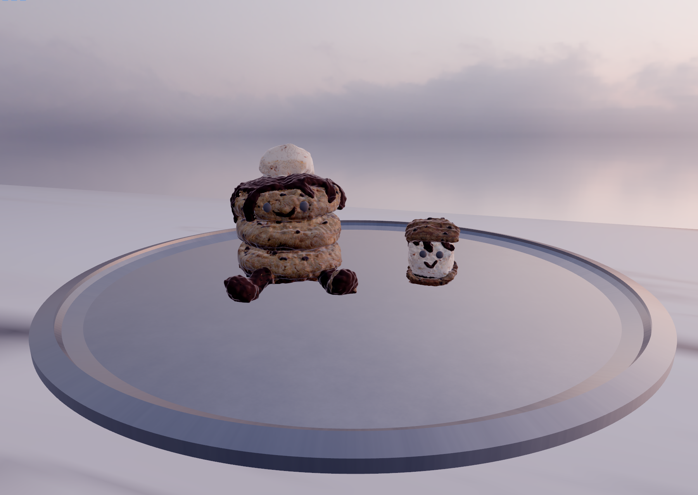

Astral Engine Showcase
A collection of scenes rendered in my custom C++ and Vulkan engine, demonstrating various graphics techniques. Click any image for a detailed view and a short video.

Bistro Exterior
A complex scene showcasing physically-based materials and cascaded shadow mapping

Sponza
A classic reference scene showcasing my image-based lighting solution

Cookie Stack and Smore
Scene with assets I modeled and textured in Blender, which I exported into Astral Engine